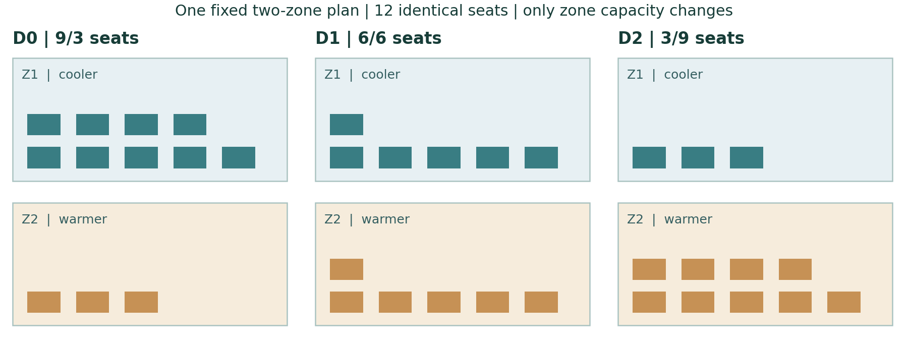
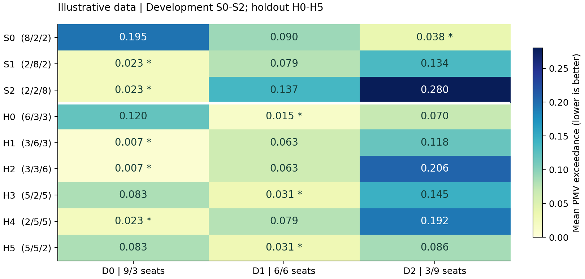
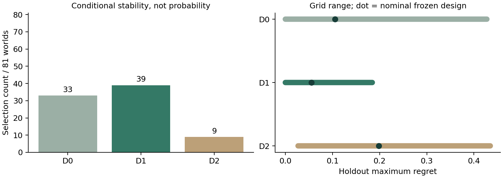

Robust seating capacity under changing user composition
PeopleComfort v0.1.0 · Illustrative method prototype · 18 November 2026
Research background and problem
Shared reading rooms, workplaces and other multi-user interiors often contain spatial differences in thermal conditions. People also differ in activity, clothing, preferences and ability to move. A design sized for one assumed user mix may perform poorly when that mix changes. The architectural decision examined here is the distribution of useful seating capacity across contrasting thermal zones before the eventual mix of users is known. The question is: Which fixed seating configuration has the smallest opportunity loss across plausible user compositions, given identical total capacity and an implementable assignment rule?
This problem connects environmental design to space allocation. Research has documented individual thermal-preference patterns and their spatial context [1], optimized cubicle assignments for different personal comfort preferences [2], and coupled personal comfort models with space matching [3]. Seat-change recommendations have also been explored alongside air-conditioning control [4]. These studies establish that heterogeneous users and seating matter. The narrower gap examined here is an auditable, pre-occupancy comparison of physical zone capacities under uncertain future composition, with a frozen design decision, holdout compositions and joint input stress testing. This is a positioning claim for this prototype, not a systematic-review claim that no prior study has addressed it.
The potential contribution is a method for asking where flexibility should be built into a shared plan, rather than merely optimizing a single day's assignments. Its value depends on environmental evidence, feasible user movement and an explicitly chosen fairness objective. The present artifact demonstrates the calculation chain with constructed data; it does not establish real occupant benefit.
1. Prototype Scope
Design decision. Twelve functionally identical seats are distributed between two zones of one unchanged schematic plan. The cooler zone Z1 and warmer zone Z2 each have physical capacity for up to nine seats. D0, D1 and D2 are design alternatives, not user groups, temperatures or three different floor plans. Each has twelve seats, the same two environmental inputs and the same allocation algorithm. Their only controlled difference is how many seats are available in each zone.

| Design | Z1 cooler-zone seats | Z2 warmer-zone seats | Meaning |
|---|---|---|---|
| D0 | 9 | 3 | Illustrative existing configuration; most capacity is in the cooler zone |
| D1 | 6 | 6 | Even distribution; preserves capacity in both environments |
| D2 | 3 | 9 | Most capacity is in the warmer zone |
The image is a capacity diagram, not a measured floor plan: it does not assert seat coordinates, circulation widths, facade effects or actual room geometry. Seats are assumed equivalent in size, function and resource cost; a real study must verify these controls. Users are allocated only after a composition occurs, so the evaluation represents ideal managed matching rather than spontaneous seat choice.
Workflow route and output target. A Python package validates a project JSON, invokes pinned CBE thermal calculations through local Node.js, enumerates feasible assignments, ranks designs under three decision rules and exports full ledgers, CSV, SVG, HTML and JSON. The target is a rerunnable 3-design × 9-composition matrix, plus 81 joint input conditions.
Out of scope. Actual satisfaction, ageing physiology, behavioural prediction, transient adaptation, HVAC response, energy use, geometric feasibility and full standards compliance. Activity and clothing configurations P1–P3 are not demographic proxies. The environmental values and counts below are constructed examples, not site measurements or a visitor forecast.
1.1 Inputs, sources and controlled comparisons
| Input | Prototype value | Evidence status |
|---|---|---|
| Z1 environment | Ta=MRT=23.5°C; RH=50%; air speed=0.1m/s | Constructed cooler condition |
| Z2 environment | Ta=MRT=27.5°C; RH=50%; air speed=0.1m/s | Constructed warmer condition |
| P1 | Seated rest, 1.0 met, 0.5 clo | Exploratory activity/clothing configuration |
| P2 | Seated task, 1.2 met, 0.5 clo | Exploratory activity/clothing configuration |
| P3 | Seated task, 1.2 met, 0.8 clo | Exploratory warmer-clothing configuration |
| Development compositions | S0=8/2/2; S1=2/8/2; S2=2/2/8, in P1/P2/P3 order | Constructed alternatives, each totaling 12 |
| Holdout compositions | H0=6/3/3; H1=3/6/3; H2=3/3/6; H3=5/2/5; H4=2/5/5; H5=5/5/2 | Constructed transfer checks, excluded from selection |
| PMV calculation | Pinned CBE comfort_tool implementation | Calculation reference, not field validation |
The same zones, total seats, conditions, profiles, objective and matching rule apply to every design in the nominal comparison. Each design's allocation must obey zone capacity, profile access and full assignment of all twelve people. The user mix changes through explicit counts; no age, gender or other demographic label is converted into a thermal coefficient.
Calculation convention. The adapter calls CBE comf.pmvElevatedAirspeed with self-generated air speed enabled and external work zero. The official function applies its dynamic-clothing and cooling-effect corrections once; the output records PMV, PPD, relative air speed, dynamic clothing and cooling effect. The original CBE JavaScript is pinned to commit e809c965dd6eb2e785bf4851de2149c7a1d3c299 and bundled with its GPL-2.0 notices [5]. A PMV interval is used here as a project screening rule, not as proof of standards compliance or individual satisfaction.
1.2 Research hypothesis and rival explanations
Primary, testable prototype hypothesis: with the declared candidates and development compositions, minimizing maximum regret selects a different capacity distribution from minimizing only S0 loss, and the frozen robust choice has lower maximum regret across the six holdout compositions. A provisional comparison threshold is a 20% reduction. This criterion evaluates the constructed decision workflow; it is not a prespecified clinical or population effect.
Alternative explanations and threats: the result may depend on the two chosen zone temperatures, the constructed composition envelope, symmetric PMV penalty, equal seats and ideal allocation. A balanced option may appear successful merely because the candidate set omits other layouts. The sensitivity grid and explicit holdout split probe some of these concerns, but observed behaviour and environmental feedback remain untested.
2. Workflow Artifact and reproducibility
The complete source package, project JSON, pinned CBE files, license, results and verification records are supplied. Python 3.11+ and Node.js 18+ are required; the computation itself has no third-party Python dependency. This build used Python 3.12.12 and Node v24.11.1. Run from the package root:
python run.py analyze --project examples/minimal/project.json --out rerun
python -m unittest discover -s tests -v
python run.py serve
The first command rebuilds all numerical outputs and the SVG; the second checks the implementation; the third opens the browser workbench at http://127.0.0.1:8765. pyproject.toml also supports local installation. The report and PNG figures can be regenerated using python coursework/build_report.py with requirements-report.txt. Canonical input hash, engine source hash, source commit, runtime manifest, deterministic tie breaking and output hashes make differences inspectable. A screenshot is illustrative only; executable source and full inputs are the submitted artifact.
| Submitted path | Inspectable purpose |
|---|---|
| src/peoplecomfort/, run.py, pyproject.toml | Calculation, enumeration, CLI, local interface |
| examples/minimal/project.json | Zones, users, alternatives, scenario roles, stress ranges |
| results/ | Input snapshot, row-level comparison, thermal and allocation ledgers, figures |
| tests/, verification/ | 12 deployed CBE cases, 13 tests, installation and provenance records |
| docs/, README.md | Setup, schema, operations, limitations |
| coursework/ | This report and reproducible report builder |
3. Workflow Description
| Input | Operation | Output | Quality check | Design interpretation |
|---|---|---|---|---|
| Two zones, three profiles, three designs, nine compositions | Validate units, IDs, sources, counts and capacity | Accepted project or error | Reject missing, inconsistent and impossible inputs | Define a fair comparison boundary |
| Six-factor thermal conditions | Evaluate pinned CBE function | Profile × zone PMV ledger | Compare 12 cases with deployed CBE values | Describe the modelled contrast |
| Profile counts and seat limits | Exhaustively enumerate feasible integer assignments | Assignment and mean exceedance for each cell | Independent per-person oracle; manual small case | Best managed performance under each capacity |
| Development losses | Apply T1/T2/T3 | Frozen selections | Preserve ties; prohibit holdout leakage | Compare decision rules |
| Frozen alternatives and holdout | Compute regret | Holdout maximum gap | Do not reselect the primary decision | Test transfer to additional constructed mixes |
| Joint stress ranges | Recalculate all affected quantities | Winner switching and regret ranges | Frequency is not probability | Expose conditionality of recommendation |
4. Generative Loop and method rationale
Input condition: one fixed two-zone schematic, twelve people and twelve seats, known candidate zone environments and explicit task/access constraints. Variable/range: three zone-capacity distributions, integer assignments of every profile to allowed zones, three development and six holdout compositions. Variants: D0=9/3, D1=6/6 and D2=3/9. Evaluation metric: person-weighted mean PMV exceedance, accompanied by flagged counts, worst-profile burden and assignments. Output: design-by-composition matrix, allocation ledger and regret. Comparison rule: T1 keeps D0; T2 minimizes loss for S0; T3 minimizes maximum regret across S0–S2. Design action: retain a conditional candidate for site-specific review only if constraints and the declared holdout comparison pass; otherwise report an unresolved or baseline decision.
For profile i in zone z, define exceedance e(i,z)=max(0, |PMV(i,z)| - tau), where nominal tau=0.5. Absolute PMV prevents cold and warm values from cancelling. The exceedance is a transparent model screening quantity, not an observed dissatisfaction rate or health outcome. For profile count n(i), let x(i) occupy Z1 and n(i)-x(i) occupy Z2. Capacity and allowed-zone restrictions apply; all people remain counted. The design/composition loss L(d,s) is the sum of their exceedances divided by twelve. An infeasible allocation has no valid loss; it is never silently assigned zero.
The small two-zone integer space permits complete enumeration, bounded by the product of (n(i)+1). For each design and composition, the algorithm minimizes L, then uses the lowest worst-profile mean loss and a fixed lexicographic order to resolve allocation ties. Design-selection ties remain visible. This avoids heuristic optimum error within the declared model, though it does not make the model behaviourally realistic.
Regret is R(d,s)=L(d,s)-min_d' L(d',s) over feasible candidates. T3 minimizes the largest R across development compositions. Minimax regret is appropriate here because composition probabilities are not known: it expresses the cost of choosing one fixed design if a different mix materializes. It depends on the candidate set, scenario range, PMV-based objective and ideal recourse. It should not be interpreted as a forecast of occupants' actual seating choices.
Decision scale. The spatial intervention is the distribution of seats available in each environment. The second-stage allocation is a common operating assumption used to evaluate all designs. Keeping these levels distinct prevents an assignment improvement from being mistaken for a physical design improvement.
5. Prototype Output and design interpretation
Under nominal constructed inputs, T1 retains D0, T2 chooses D2 and T3 chooses D1. The heat map displays all 27 design/composition comparisons. Decisions use unrounded values; printed values are rounded.

| Design | S0 loss | S1 loss | S2 loss | Dev. max regret | Holdout max regret |
|---|---|---|---|---|---|
| D0 | 0.1953 | 0.0234 | 0.0234 | 0.1570 | 0.1052 |
| D1 | 0.0900 | 0.0785 | 0.1372 | 0.1139 | 0.0552 |
| D2 | 0.0383 | 0.1337 | 0.2805 | 0.2571 | 0.1984 |
The S0-heavy P1 mix gives D2 the lowest baseline loss. Under S1 and S2, the value of Z1 capacity rises; D1 limits the worst opportunity loss across the development envelope. T2's holdout maximum regret is 0.1984 and T3's is 0.0552, a 72.19% reduction. The provisional 20% criterion is met in this constructed case. This percentage describes model regret relative to D2, not a measured increase in satisfaction, a predicted fraction of occupants helped or a population-level treatment effect.
The thermal ledger explains the mechanism. P1 has PMV approximately -0.951 in Z1 and +0.530 in Z2; P3 has +0.086 in Z1 and +1.073 in Z2. Therefore the same capacity distribution can have different losses as the profile counts change. P1's +0.530 is near the +0.5 screening boundary, making the exact ranking sensitive to inputs and threshold. D1 is a conditional compromise within these three alternatives, not a universal 6/6 prescription. Type-level results should be reviewed because a lower aggregate regret need not help every profile in every scenario.
6. Verification and Failure Log
6.1 What was verified
| Level | Check | Result and scope |
|---|---|---|
| CBE adapter | 12 input sets captured from the public deployment's function; maximum PMV difference 3.11e-14 and PPD difference 1.38e-12 | Numerical adapter agreement for tested conditions |
| Allocation | Independent individual-assignment oracle; manual three-person case with minimum total burden 0.5 and mean 0.5/3 | Optimum, denominator and flagged count checked |
| Boundary logic | Invalid totals, capacities, missing source, inaccessible users, equal environments and ties | Rejected or represented explicitly |
| Scenario separation | Change holdout counts and rerun | Development selection unchanged |
| Reproducibility | Repeat computation, wheel installation outside source tree and CLI execution | Same result bytes and recorded output hashes |
| Interface | Edit, invalid-count error, correction, import, export and guide navigation | Browser workflow completed in English |
There are 13 automated tests; the complete log is in verification/test_log.txt. CBE deployed and bundled code share ancestry. Their numerical agreement checks integration, not independent physical validity. The small manual case and separate enumeration oracle check assignment logic independently. Actual thermal conditions, user votes, preferred seating, furniture effects and room geometry have not been measured. No empirical comfort or ageing claim follows from these checks.
6.2 Failure and revision record
| Event | Observation | Consequence |
|---|---|---|
| Source retrieval and script path | Initial restricted network and an incorrect guessed script path required source provenance review | Official pinned source and license were bundled; runtime is offline |
| Example path and local preview | An initial copy path and preview access failed | Corrected before packaging; rerun and browser checks passed |
| Infeasible assignment | Deliberate inaccessible/capacity examples have no full allocation | Report infeasible, never zero burden |
| Recommendation stability | Nominal D1 wins only 39 of 81 stress conditions | A universal-winner interpretation fails |
| Empirical validity | No measured room or occupant dataset | Field effectiveness remains unverified |
The assumptions with greatest decision impact are that the environmental field remains fixed when furniture or occupancy changes, and that an operator can implement the optimal user allocation. Neither is established by CBE numerical agreement.
6.3 Joint uncertainty and limits of inference
The stress grid combines three common Ta/MRT offsets (-0.5, 0, +0.5°C), three opposing zone shifts (-0.5, 0, +0.5°C), three common clothing offsets (-0.1, 0, +0.1 clo) and three screening thresholds (0.4, 0.5, 0.6 PMV). It contains 81 joint conditions. Air and mean radiant temperatures shift together as declared; the grid is a transparent perturbation design, not a calibrated instrument-error model or confidence interval.

World-specific development winners occur D0=33, D1=39 and D2=9 times. Fixed-design holdout maximum-regret ranges are D0=0.0000–0.4275, D1=0.0000–0.1844 and D2=0.0268–0.4350. These are counts of chosen grid points, not probabilities. The nominal T3 decision remains frozen when testing the grid; recomputing world-specific winners diagnoses sensitivity and does not retroactively choose the design.
Holdout compositions were constructed by the researcher and use the same thermal engine; they test finite scenario transfer rather than independent participants or buildings. Unquantified uncertainties include within-profile variation, actual thermal preference, mobility and seat choice, occupancy effects on the environment, other possible layouts, equal weights among users and the symmetry of hot/cold penalties. Some individuals may be worse off under an aggregate-best design. A future study should predefine fairness and access constraints and test practical allocation before claiming occupant benefit.
6.4 A4 extension and broader significance
Apply the workflow to a documented past or current design decision. Measure or justify spatial conditions, map real usable capacities and access restrictions, observe how people choose seats, and record thermal votes. Freeze candidates and ranges before evaluation; compare model allocations with observed behaviour, then revise assumptions where they fail. Possible extensions include time-varying occupancy, more than two zones, local comfort models, accessibility, daylight and noise, energy and adaptation costs. The broader research question becomes how a shared interior can retain useful options for different users as its population changes, and which flexibility is worth designing into the physical plan.
6.5 AI-assisted verification disclosure
AI assisted code, test, interface and report drafting. verification/AI_LOG.md records the work and checks; it is a summary rather than a verbatim prompt transcript. All input environments and user counts are marked as constructed. No field measurement, participant evidence or independent physiological validation was generated by AI.
References
- Shahzad, S. et al. (2019). Patterns of thermal preference and Visual Thermal Landscaping model in the workplace. Applied Energy. https://doi.org/10.1016/j.apenergy.2019.113674
- Optimal Open Space Cubicle Assignment Considering Personal Thermal Comfort Differences. https://experts.mcmaster.ca/scholarly-works/2147169
- Space-matching strategies based on personal comfort models to optimize collective comfort probability. Building and Environment (2025). https://www.sciencedirect.com/science/article/pii/S0360132325003014
- Human-centric Air Conditioning System with Seat Changes. IBPSA ASIM (2024). https://publications.ibpsa.org/conference/paper/?id=asim2024_1308
- Center for the Built Environment. PMV model documentation and comfort_tool source. https://cbe-berkeley.gitbook.io/thermal-comfort-tool/documentation/pmv ; https://github.com/CenterForTheBuiltEnvironment/comfort_tool
- ARCH7476. Assignment 03 and Assignment 04. https://caadfutures2025.hku.hk/ARCH7476/assignments/assignment-03.html ; https://caadfutures2025.hku.hk/ARCH7476/assignments/assignment-04.html